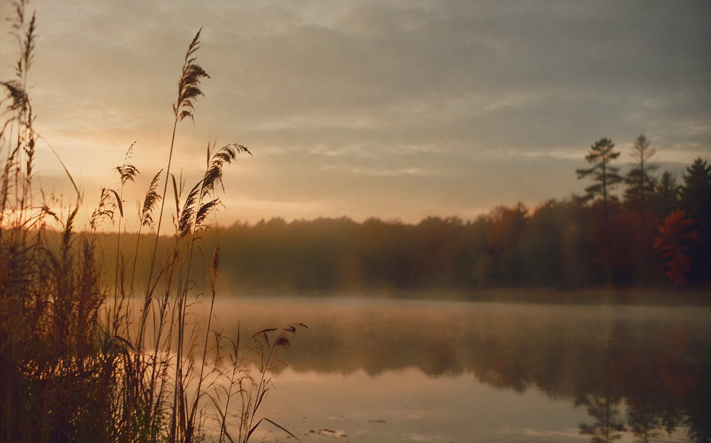

PHOTOS · 摄影
蒹葭 · 白露为霜

拍芦苇要等。下午四点到的湖边，光还是硬的，芦花灰扑扑，毫无诗意。我找了块石头坐下，喂了半小时蚊子，看太阳一点点矮下去。五点二十，奇迹开始：低角度的光穿过芦花，整片芦苇突然通体发光，像有人在水边点了几千支小蜡烛。
只有十分钟。十分钟后，光斜进水里，芦苇重新变回普通的草。我屏着呼吸拍完最后一张，忽然特别理解「所谓伊人，在水一方」——美的事物大多这样：在水一方，限时十分钟，不许靠得太近。
摄影教我的最重要的事，不是构图，是等待，以及接受「错过了就明天再来」。生活里的很多时刻也一样：光来了就是来了，你只有站好，举起相机，别说话。
完